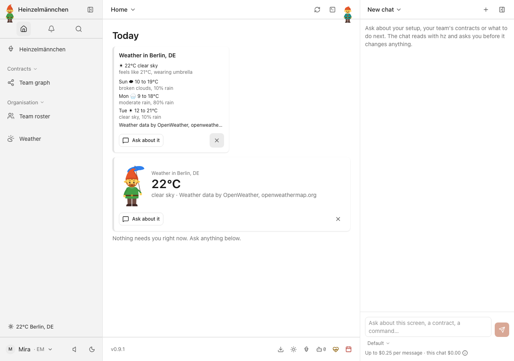
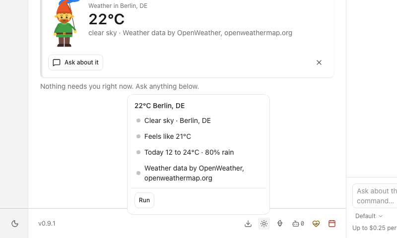
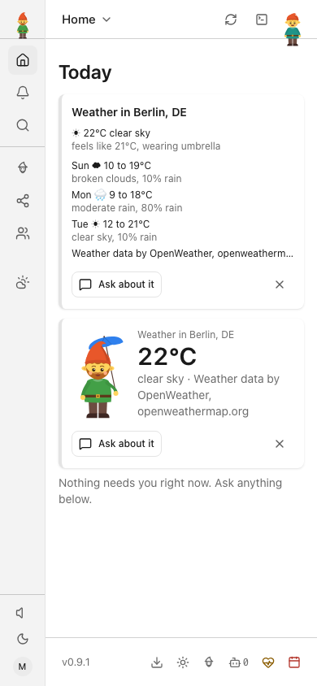
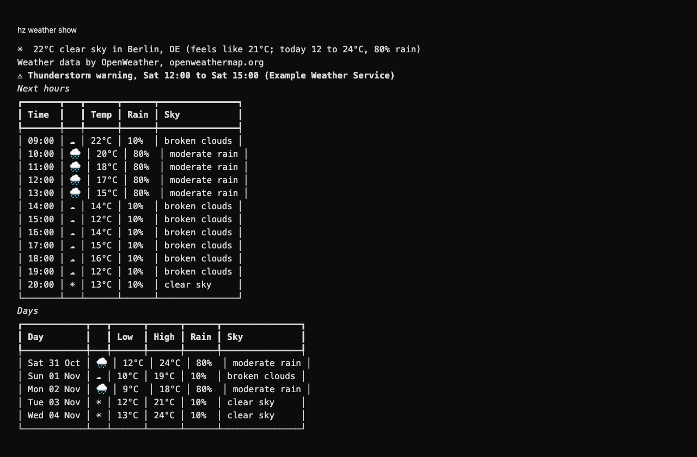
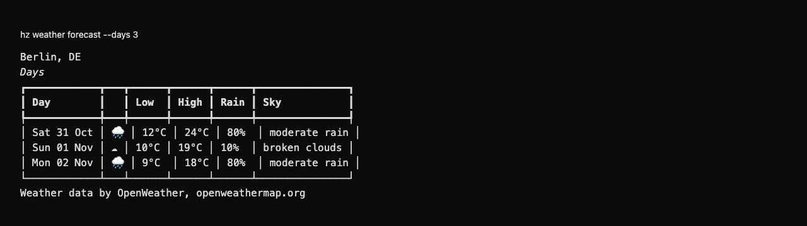

heinzel-weather
Isolated demonstration profile · Core 0.9.1 · Review these captures before committing. Click an image to inspect it at full size.

UI · Current weather and the coming days on Today — fictional Berlin forecast
UI · Inspect conditions, feels-like temperature and rain chance — fictional local forecast
UI · Weather and near forecast in the phone-sized Today view — fictional local forecast
CLI · Hourly conditions and approaching rain through the real CLI — local fictional forecast
CLI · A concise three-day outlook through the real CLI — local fictional forecast